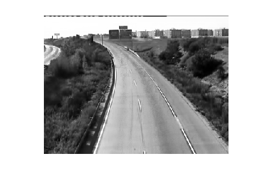
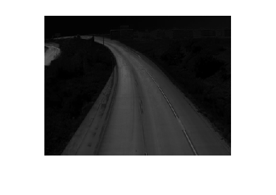

nbIterations = 614; compteurIteration = 1; hauteur = 288; largeur = 384; valeurPixel = zeros(hauteur,largeur,nbIterations); ecartType = zeros(hauteur,largeur); moyenne = zeros(hauteur,largeur,'int32'); imageFiltree = zeros(hauteur,largeur); imageChargee = zeros(nbIterations, hauteur,largeur); % --------------------------------- Q1 --------------------------------- while (compteurIteration < nbIterations) if(compteurIteration < 10) I = imread(['image_00' num2str(compteurIteration, '%01d') '.jpg']); % Charger l'image end if(compteurIteration >= 10 && compteurIteration < 100) I = imread(['image_0' num2str(compteurIteration, '%02d') '.jpg']); % Charger l'image end if(compteurIteration >= 100) I = imread(['image_' num2str(compteurIteration, '%02d') '.jpg']); % Charger l'imagew end if ndims(I) == 3 I = rgb2gray(I); % Convertir en niveaux de gris end [hauteur, largeur] = size(I); for colonne = 1:hauteur for ligne = 1:largeur moyenne(colonne,ligne) = moyenne(colonne,ligne)+int32(I(colonne,ligne)); valeurPixel(colonne,ligne,compteurIteration) = I(colonne,ligne); end end compteurIteration = compteurIteration + 1; end %calcul de la moyenne for colonne = 1:hauteur for ligne = 1:largeur moyenne(colonne,ligne)=moyenne(colonne,ligne)/(nbIterations-1); end end % calcul de l'écart type for colonne = 1:hauteur for ligne = 1:largeur for nbImages = 1:nbIterations ecartType(colonne,ligne) = ecartType(colonne,ligne)+(((valeurPixel(colonne,ligne,nbImages)-moyenne(colonne,ligne))^2)/nbIterations); end ecartType(colonne,ligne) = sqrt(ecartType(colonne,ligne)); end %colonne end % % % % % ----------------- Q1 FILTREE ---------------------------- compteurIteration = 1; while (compteurIteration < nbIterations) if(compteurIteration < 10) I = imread(['image_00' num2str(compteurIteration, '%01d') '.jpg']); % Charger l'image end if(compteurIteration >= 10 && compteurIteration < 100) I = imread(['image_0' num2str(compteurIteration, '%02d') '.jpg']); end if(compteurIteration >= 100) I = imread(['image_' num2str(compteurIteration, '%02d') '.jpg']); end ycbcrImage = rgb2ycbcr(I); luminance = ycbcrImage(:,:,1); Cb = ycbcrImage(:,:,2); Cr = ycbcrImage(:,:,3); hsvImage = rgb2hsv(I); H = hsvImage(:,:,1); S = hsvImage(:,:,2); V = hsvImage(:,:,3); % figure; % imshow(ycbcrImage); % figure; % imshow(luminance); % figure; % imshow(Cb); % figure; % imshow(Cr); if ndims(I) == 3 I = rgb2gray(I); % Convertir en niveaux de gris end for colonne = 1:hauteur for ligne = 1:largeur if(ecartType(colonne,ligne)>20) imageFiltree(colonne,ligne) = 255; if(abs(uint8(moyenne(colonne,ligne))-I(colonne,ligne))>20) imageFiltree(colonne,ligne) = 0; if(H(colonne,ligne)>0.4&&H(colonne,ligne)<0.90&&S(colonne,ligne)<0.5&&S(colonne,ligne)>0.1&&V(colonne,ligne)<0.4&&V(colonne,ligne)>0.05) imageFiltree(colonne,ligne) = 255; end if(luminance(colonne,ligne)<70&&luminance(colonne,ligne)>23&&Cb(colonne,ligne)>122&&Cb(colonne,ligne)<142&&Cr(colonne,ligne)>122&&Cr(colonne,ligne)<133) imageFiltree(colonne,ligne) = 255; end end else imageFiltree(colonne,ligne) = 0; end end end % if(compteurIteration == 1) % figure; % imshow(uint8(imageFiltree)); % end % % if(compteurIteration == 101) % figure; % imshow(uint8(imageFiltree)); % end % % if(compteurIteration == 201) % figure; % imshow(uint8(imageFiltree)); % end % % if(compteurIteration == 301) % figure; % imshow(uint8(imageFiltree)); % end % % if(compteurIteration == 401) % figure; % imshow(uint8(imageFiltree)); % end % % if(compteurIteration == 501) % figure; % imshow(uint8(imageFiltree)); % end % % if(compteurIteration == 601) % figure; % imshow(uint8(imageFiltree)); % end %figure; %imshow(uint8(imageFiltree)); compteurIteration = compteurIteration + 1; end %--------------------------------- Q2 --------------------------------- compteurIteration = 1; for compteurIteration = 1:nbIterations if(compteurIteration < 10) I = imread(['image_00' num2str(compteurIteration, '%01d') '.jpg']); % Charger l'image end if(compteurIteration >= 10 && compteurIteration < 100) I = imread(['image_0' num2str(compteurIteration, '%02d') '.jpg']); end if(compteurIteration >= 100) I = imread(['image_' num2str(compteurIteration, '%02d') '.jpg']); end if ndims(I) == 3 I = rgb2gray(I); % Convertir en niveaux de gris end for colonne = 1:hauteur for ligne = 1:largeur imageChargee(compteurIteration,colonne,ligne) = I(colonne,ligne); end end end tableauGaussSomme = zeros(hauteur,largeur); for colonne = 1:hauteur for ligne = 1:largeur tableauPixel = zeros(1,nbIterations); tableauGauss = zeros(1,256); for compteurIteration = 1:nbIterations tableauPixel(compteurIteration) = imageChargee(compteurIteration,colonne,ligne); end % figure; % plot(tableauPixel); % ylim([0, 255]); % xlim([0, nbIterations]); % xlabel('Nombre itérations') % ylabel('Valeur du pixel en niveau de gris') for cptIt = 1:nbIterations tableauGauss(tableauPixel(cptIt)+1) = tableauGauss(tableauPixel(cptIt)+1)+1; end % tableauGaussSomme(colonne,ligne) = sum(tableauGauss); % figure; % plot(tableauGauss); % xlim([0, 256]); % xlabel('Niveau de gris') % ylabel('Occurence') maxTableau = max(tableauGauss); seuil = maxTableau*0.1; nbElementMoyenne = 0; moy = 0; for compteurSeuil = 1:256 if(tableauGauss(compteurSeuil)>seuil) moy = moy + compteurSeuil*tableauGauss(compteurSeuil); nbElementMoyenne = nbElementMoyenne + tableauGauss(compteurSeuil); end end % Calcul 2eme moyenne moyenne(colonne,ligne) = (moy/nbElementMoyenne)-1; ligne; end end % Calcul 2eme ecart-type for colonne = 1:hauteur for ligne = 1:largeur for nbImages = 1:nbIterations ecartType(colonne,ligne) = ecartType(colonne,ligne)+(((imageChargee(nbImages,colonne,ligne)-moyenne(colonne,ligne))^2)/nbIterations); end ecartType(colonne,ligne) = sqrt(ecartType(colonne,ligne)); end end figure; imshow(uint8(moyenne)); % Affichage de la moyenne en 1 image figure; imshow(uint8(ecartType)); % Affichage de l'écart type en 1 image %figure; %imshow(uint8(imageFiltree));

